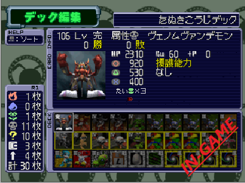
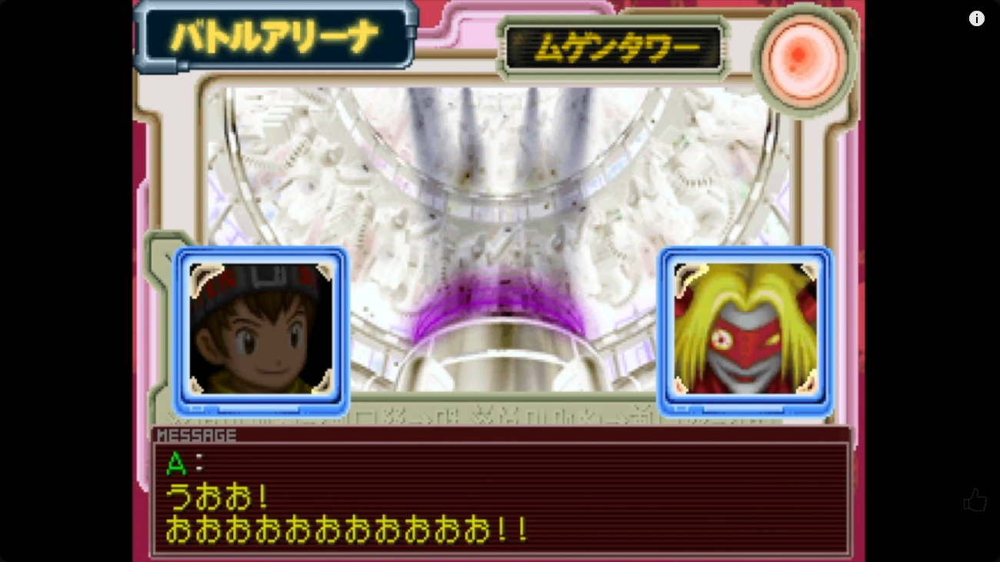

0/15ตอนที่ทำเสร็จ
11พื้นที่เส้นทางหลัก
100%มีจุดเตือน Missable
⚠️ คนเล่น Veemon ที่เพิ่งจบ Beginner Arena: เริ่มที่ Flame City ก่อน และเก็บ Hacking #254 จาก WereGarurumon ที่ Wiseman Tower ก่อนออกไป Infinity Tower ช่วงเนื้อเรื่องหลัก; หากต้องการ 100% ให้กลับไปเล่น Igloo City Arena รอบที่ Garurumon เป็นผู้คุมด้วย
🕹️ ภาพบรรยากาศจริงจากเกม


ที่มาของบทสรุปและภาพ: สรุปและเรียบเรียงใหม่เป็นภาษาไทยจาก Robert Jennings — FAQ/Walkthrough, ZeoKnight — 100% Walkthrough และ วิดีโอเดินเกม 100% • ภาพการ์ด PS1 และภาพหน้าจอจาก Digimon Digital Card Battle Guide • เว็บไซต์แฟนเมด ไม่ใช่ข้อมูลทางการของ Bandai
หมายเหตุ: ชื่อตัวละคร/รางวัลบางชนิดต่างกันตามภาษาเกม และการปลดล็อก Extra Arena จะเปลี่ยนตามความคืบหน้า
หมายเหตุ: ชื่อตัวละคร/รางวัลบางชนิดต่างกันตามภาษาเกม และการปลดล็อก Extra Arena จะเปลี่ยนตามความคืบหน้า